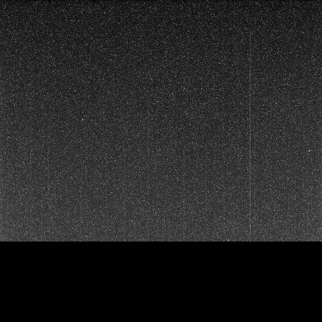
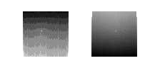
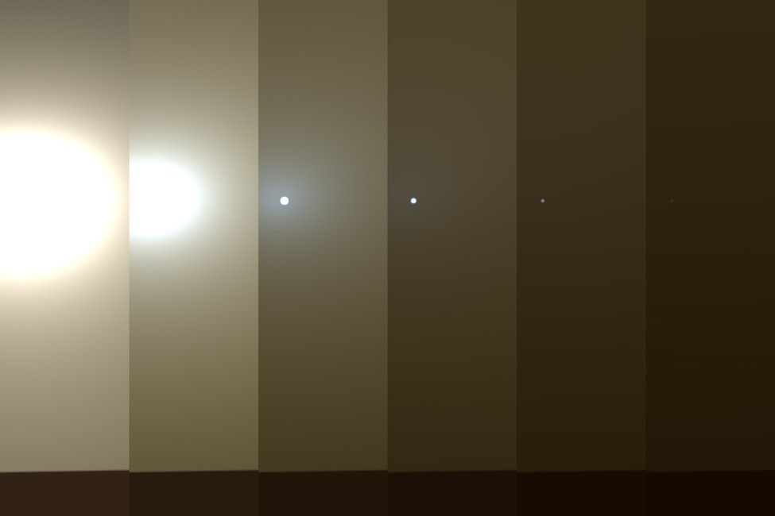
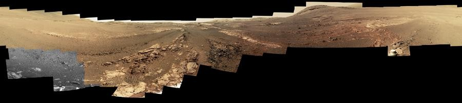
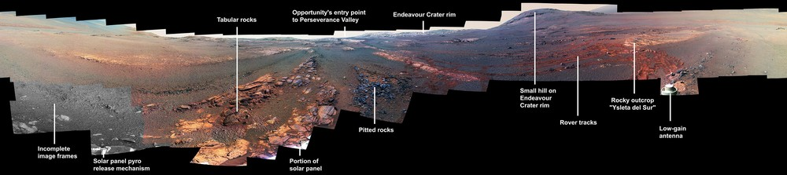
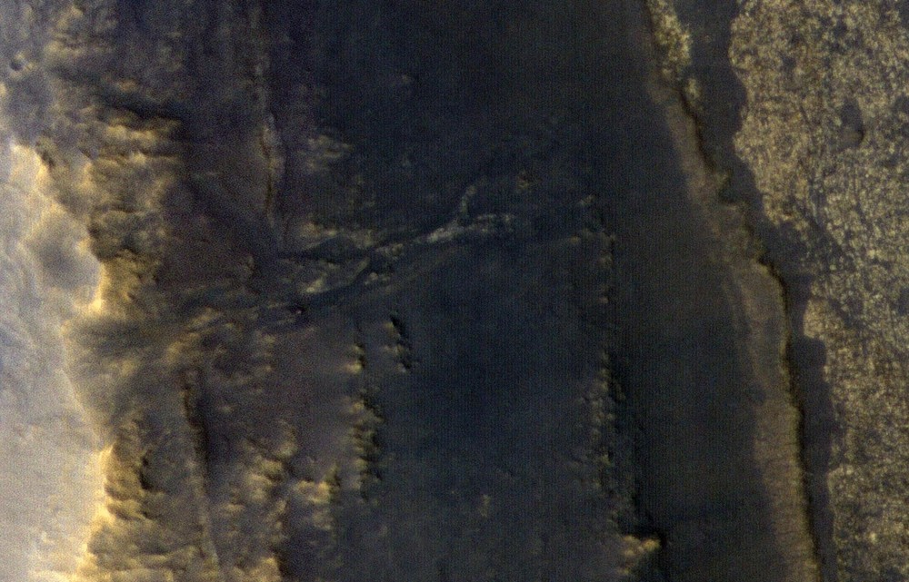
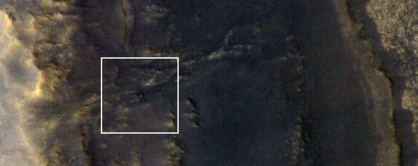
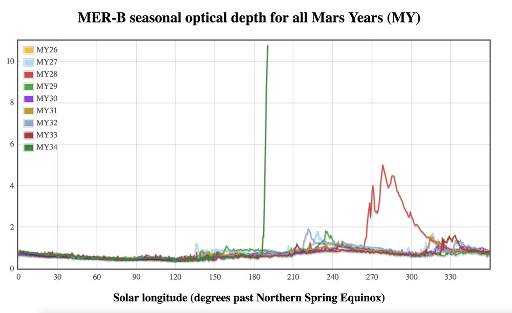
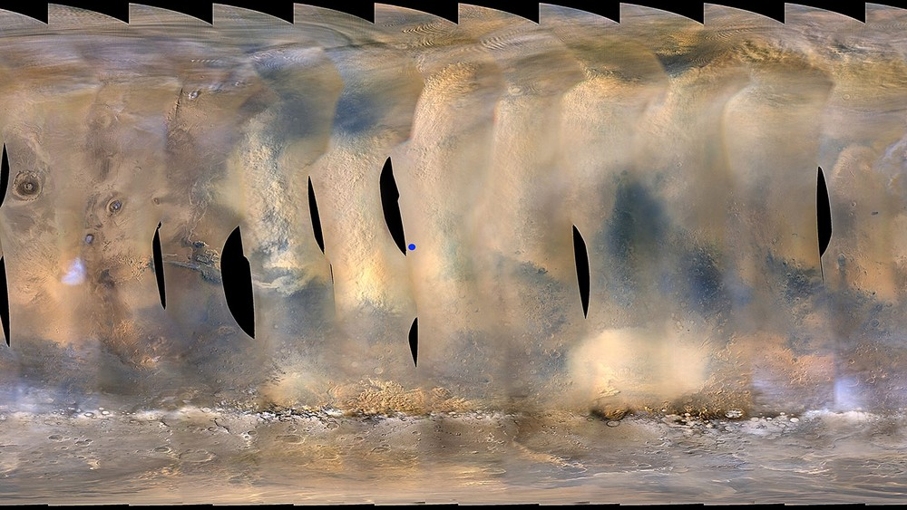

OBSERVATION · M3-R01

Opportunity's Last Message — PIA22929
[1024, 1024] · 314,160 bytes · essential
Archival evidence card after loss of contact.
Black lower region is untransmitted data; white speckles are camera noise. Not the last exposure. Preserve original pixels; no completion, denoising or fake slow reveal of scenery.
- Observation
- 2018-06-10; sol 5111; around 09:30 PDT
- Publication
- 2019-03-12
- Credit
- NASA/JPL-Caltech/Cornell/ASU
Original file · Primary source
OBSERVATION · M3-R02

Last Images Opportunity Took — PIA22930
[224, 96] · 1,527 bytes · essential
Explain last taken versus last transmitted.
Low-resolution thumbnails only; full frames were not received. Source EDT parenthetical has an a.m./p.m. inconsistency; retain PDT. Do not invent missing detail or treat as natural-color photographs.
- Observation
- 2018-06-10; sol 5111; around 09:33 PDT
- Publication
- 2019-03-12
- Credit
- NASA/JPL-Caltech/Cornell/ASU
Original file · Primary source
SIMULATION · M3-R03

Shades of Martian Darkness — PIA22521
[1500, 1000] · 180,203 bytes · essential
Atmosphere/presentation reference and explicit educational illustration.
Not continuous measured illumination or a render-calibration lookup table. Label Simulation. Displayed apparent Sun size is brightness presentation.
- Observation
- Not an image-acquisition sequence; simulated tau 1,3,5,7,9,11
- Publication
- 2018-06-13
- Credit
- NASA/JPL-Caltech/TAMU
Original file · Primary source
OBSERVATION · M3-R04

Opportunity Legacy Pan — PIA22909 approximate true color
[900, 201] · 24,818 bytes · essential
Final-region terrain, rock grouping, horizon and palette reference.
Multi-date mosaic, not a single final moment or calibrated scene illumination. Some lower-left panels lack full color. This JPEG is the publisher's provided version; full-resolution TIFF is link-only.
- Observation
- 2018-05-13 through 2018-06-10; sols 5084–5111; 354 component images
- Publication
- 2019-03-12
- Credit
- NASA/JPL-Caltech/Cornell/ASU
Original file · Primary source
OBSERVATION · M3-R05

Annotated final panorama — PIA22908 false color
[3000, 670] · 499,084 bytes · useful
Locate tracks, working outcrops, crater rim and valley floor.
False color is not material palette. Do not reuse the caption's internally inconsistent June 3/sol 5014 pairing. Diagram labels do not supply rover heading.
- Observation
- 2018-05-13 through 2018-06-10; sols 5084–5111
- Publication
- 2019-03-12; migrated file listing dates differ
- Credit
- NASA/JPL-Caltech/Cornell/ASU
Original file · Primary source
OBSERVATION · M3-R06

Opportunity After the Dust Storm — PIA22549
[2170, 1390] · 492,120 bytes · useful
Location and later recovery-campaign context.
Does not establish battery state, solar-array dust thickness or new rover motion. Captions refer to different 47 m and approximately 1 km context boxes; do not use a box as a scale without matching the figure.
- Observation
- 2018-09-20, after contact was lost
- Publication
- 2018-09-25
- Credit
- NASA/JPL-Caltech/Univ. of Arizona
Original file · Primary source
OBSERVATION · M3-R07

HiRISE ESP_056955_1775 contextual detail
[840, 333] · 305,900 bytes · useful
Regional layout/orbital orientation reference.
Product center is -2.335 degrees latitude, 354.652 degrees east longitude; these are not exact rover coordinates. Source full map-projected scale is 25 cm/pixel, north up; the context JPEG must not inherit that pixel scale. Not a DEM or final rover pose measurement.
- Observation
- 2018-09-20; local Mars time 14:56
- Publication
- 2018-09-25
- Credit
- NASA/JPL-Caltech/UArizona
Original file · Primary source
CHART / MAP · M3-R08

Atmospheric Opacity from Opportunity's Point of View
[2023, 1236] · 355,537 bytes · useful
Engineering briefing and relative storm onset context.
Horizontal axis is Martian season, not wall-clock seconds. Raster chart is not a continuous machine-readable telemetry series; no digitization or calibration was performed.
- Observation
- Multiple Mars years; 2018 trace shown as of publication
- Publication
- 2018-06-12
- Credit
- NASA/JPL-Caltech/TAMU
Original file · Primary source
CHART / MAP · M3-R09

Growing dust storm — June 6, 2018 MARCI map
[1400, 788] · 278,147 bytes · useful
Show local-to-regional spread before later planet-encircling classification.
Blue dot is approximate Opportunity position; not a rover photograph or elevation product. Annotation/processing must remain identified.
- Observation
- Storm extent as of 2018-06-06
- Publication
- Original status story 2018-06-08; updated page 2018-07-26
- Credit
- NASA/JPL-Caltech/MSSS
Original file · Primary source